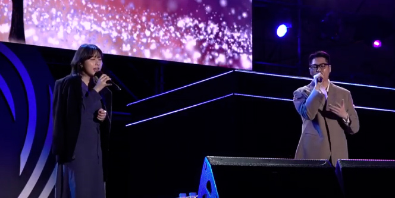

안내 말씀 드리겠습니다. 잠시 후, 신랑 이인하군과 신부 김유현양의 예식이 시작 될 예정이오니, 내빈 여러분께서는 식장 안으로 입장하셔서 앞쪽부터 자리에 착석해 주시기 바랍니다.
아울러 코로나 19로 인해 최대한 간결하고 정숙하게 진행할 예정이며, 소지하고 계신 핸드폰은 진동으로 바꿔주시면 감사하겠습니다.
안녕하십니까? 오늘 결혼식 사회를 맡은 신랑 이인하군의 대학교 동창 오지원입니다. 바쁘신 와중에도 신랑,신부의
앞날을 축복하기 위해 이 자리에 참석해 주신 모든 분들께 양가를 대표해 진심으로 감사의 말씀을 전합니다.
오늘 결혼식은 하객 여러분께서 예식의 증인 되는 주례 없는 결혼식으로 진행됩니다. 신랑 신부의 특별한 결혼식이 잘 진행될 수 있도록 하객 여러분의 큰 협조가 필요합니다!
작은 실수가 있더라도 너그러이 봐주시길 바라며, 두 사람에게 더 없이 소중한 날이니 만큼 자리에 참석해 주신 모든 분들께서 식 중 많은 박수와 축하를 아낌없이 보내주시기 바랍니다.
그럼 지금 부터 신랑 이인하군과 신부 김유현양의 결혼식을 시작하겠습니다! 큰 박수 부탁드립니다.
먼저, 첫 번째 순서로 아들과 딸의 앞길을 밝혀줄 화촉 점화가 있겠습니다.
어머님들께서는 두 손을 꼭 잡고 입장해 주시기바랍니다.
..
양가 어머님 입장!
..
큰 박수 부탁드립니다.
..
(어머님들이 화촉앞에 서신 모습을 확인 후)
양가 어머님들은 단상에 마련된 초에 불을 밝혀주시기 바랍니다.
(어머님 1 불을 붙인다)
(어머님 2 불을 붙인다)
어머님들은 서로 마주보시고 인사 나누시겠습니다.
양가 어머님 맞절!
(인사 끝난 뒤)
이어서 찾아주신 하객 여러분들을 향해 감사의 인사를 드리겠습니다.
양가 어머님 하객 여러분께 인사!
축하의 박수 부탁드립니다!
..
양가 어머님께서는 혼주석에 착석 부탁드립니다.
이어서 오늘의 첫 번째 주인공, 신랑 입장이 있겠습니다.
신랑 이인하 군이 지금 누구보다도 떨릴텐데요, 입장할 때 큰 함성과 박수로 맞이해 주시기 바랍니다.
(신랑 입장곡 재생)
신랑 입장!
(박수가 줄어들면 박수 유도멘트)
하객 여러분 모두 뒤쪽을 바라봐 주시기 바랍니다. 오늘 결혼식의 주인공, 신부 입장이 있겠습니다. 더 큰 박수와 환호로 신부를 맞이해주시기 바랍니다.
(신부 입장곡 재생)
신부 입장!
(걸음 거리가 느리기 때문에 중간 멘트)
(70%정도 왔을 때)
신랑은 아름다운 신부에게 다가가 맞이해주시기 바랍니다.
(인하가 입장하는 유현쪽으로 다가가 손을 잡고 함께 들어온다)
다시 한번 축하의 박수 부탁드립니다!
오늘의 두 주인공이 한 자리에 섰습니다. 두 사람이 부부로서 첫 인사를 나누는 시간을 갖도록 하겠습니다.
신랑 신부는 서로 마주보고 서주시기 바랍니다.
(인하 유현 마주본다)
양가 부모님과 일가 친척, 그리고 내빈 여러분을 모신 가운데, 서로를 존중하는 마음으로 인사를 하겠습니다.
신랑 신부 맞절!
(인하 유현 서로 인사)
계속해서 혼인서약이 있겠습니다. 오늘 혼인서약은 신랑, 신부님께서 노래로 직접 준비했다고 합니다. 하객분들 께서는 따뜻한 마음으로 들어주시면 감사하겠습니다.
신랑 신부님 목을 풀어주시고..준비되면 말씀해주세요!
(인하 유현 마이크를 받고 목을 푼다. 준비됐다고 지원이에게 말한다)
네 그럼 뮤직 스타트!

(열창 완료)